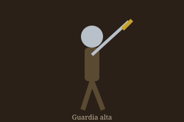
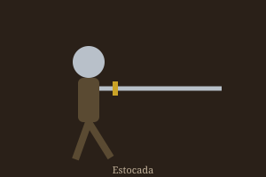
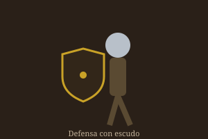

El Arte del Combate Medieval
Adéntrate en la Edad Media y descubre las armas, las armaduras y las técnicas que decidieron el destino de reinos enteros en el campo de batalla.
Una época de hierro y valor
El combate medieval no era solo fuerza bruta: era disciplina, técnica y conocimiento del equipo. Un buen guerrero debía entender qué espada empuñar, qué armadura vestir y cómo moverse en la batalla. En esta web exploramos los tres pilares del guerrero medieval.
Tipos de espadas
Cada espada respondía a una necesidad: cortar, perforar armaduras o combatir a dos manos. Estas son algunas de las más representativas.
Tipos de armaduras
De la cota de malla a la armadura de placas completa, la protección evolucionó al mismo ritmo que las armas que debía detener.
Técnicas de combate
La verdadera maestría estaba en el movimiento. Estas son algunas de las guardias y técnicas fundamentales de la esgrima medieval.



Cuenta tus golpes de entrenamiento
Golpes: 0